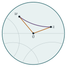

STEP III 2013、第6問
先に進む前に問題を読んでおこう。問題は STEP Support Programme の問題データベースにある： step.maths.org/questions/13-s3-q6
導入
一見すると、これは絶対値（modulus）と共役複素数（complex conjugate）を操作する練習問題で、最後に奇妙な形の不等式が出てくるだけに見える。いったい誰が \(\frac{|z - w|}{|1 - zw^*|}\) などに関心をもつのだろうか？
それは、これが距離だからである。\(z\) と \(w\) の通常の距離ではなく、別の幾何学における距離である。その幾何学では、単位円板がそれだけで無限に広がる宇宙全体となり、直線は円弧であり、三角形の内角の和は \(180^\circ\) より小さい。これが双曲幾何学（hyperbolic geometry）である。ユークリッド（Euclid）の平行線公準（parallel postulate）を証明しようとする二千年にわたる試みの末、19世紀に発見された。そして、この問題の不等式は、姿を変えたこの幾何学の三角不等式（triangle inequality）であることがわかる。さらに驚くべきことに、右辺は特殊相対性理論（special relativity）における速度の合成公式であり、これは 第 3.8 節 で扱った。
取りかかる前に
\(|z - w| \leq |z| + |w|\) は図からどのように導かれるか？（\(z\) と \(-w\) をベクトルとして考えよ。）
\(z - w = z + (-w)\) である。原点から \(z\) を矢印として描き、次に \(z\) の先端から \(-w\) を矢印として描く。原点から最終的な点への矢印が \(z - w\) であり、3本の矢印は辺の長さが \(|z|\)、\(|w|\)、\(|z - w|\) の三角形をなす。三角形の1辺の長さは、他の2辺の長さの和以下である。
また、任意の複素数 \(a\) に対して \(|a|^2 = aa^*\) であることを思い出そう。これにより、問題中のすべての絶対値を代数的な式に変換できる。
順を追って解く
段階 1 絶対値の展開
\(|z - w|^2 = (z - w)(z^* - w^*)\) を展開せよ。\((|z| + |w|)^2\) と比較せよ。
\(|z - w|^2 = zz^* - zw^* - z^*w + ww^* = |z|^2 + |w|^2 - zw^* - z^*w\) である。一方、\((|z| + |w|)^2 - E = |z|^2 + 2|z||w| + |w|^2 - zw^* - z^*w - 2|zw|\) であり、\(|z||w| = |zw|\) であるから、これは同じ式である。■
\(E = (zw^*) + (zw^*)^* + 2|zw| = 2\,\mathrm{Re}(zw^*) + 2|zw|\) であり、これは実数である。また、三角不等式により \(E = (|z| + |w|)^2 - |z - w|^2 \geq 0\) である。■
段階 2 第2の恒等式
\(|1 - zw^*|^2 = (1 - zw^*)(1 - z^*w) = 1 - zw^* - z^*w + |z|^2|w|^2\) であり、一方 \((1 + |zw|)^2 - E = 1 + 2|zw| + |zw|^2 - zw^* - z^*w - 2|zw|\) であるから、両者は同じである。■
段階 3 不等式
\(A = (|z| + |w|)^2\)、\(B = (1 + |zw|)^2\) とおく。不等式を2乗すると \(\frac{A - E}{B - E} \leq \frac AB\) となる。これはどのようなときに成り立つか？
示すべき不等式の両辺はともに0以上であるから、これは両辺を2乗した不等式 \(\frac{A - E}{B - E} \leq \frac{A}{B}\) と同値である。\(B - E = |1 - zw^*|^2 > 0\) と仮定して分母を払うと、 \[(A - E)B \leq A(B - E) \iff -EB \leq -EA \iff E(B - A) \geq 0.\] \(E \geq 0\) であるから、これは \(B \geq A\)、すなわち \(1 + |zw| \geq |z| + |w|\) のときには常に成り立つ。
\(1 + |z||w| - |z| - |w|\) が因数分解できることを示せ。これが0以上となるのはどのようなときか？
\(1 + |z||w| - |z| - |w| = (1 - |z|)(1 - |w|)\) である。\(|z| > 1\) かつ \(|w| > 1\) ならば、両方の因数が負であるから積は正である。よって \(B \geq A\) となり、不等式が成り立つ。■
逆に \(|z| < 1\) かつ \(|w| < 1\) の場合も、両方の因数が正であるから積はやはり正であり、同じ議論が通用する。つまりはい、この場合にも不等式は成り立つ。（どちらの場合も \(|zw^*| \neq 1\) であるから \(1 - zw^* \neq 0\) となり、左辺は定義される。）不等式が成り立たないことがありうるのは、一方が単位円の内側に、もう一方が外側にある混合した場合である。
振り返り
\(|a|^2 = aa^*\)。 すべての恒等式は、共役複素数どうしの積を展開することから得られた。これは絶対値を代数的に扱うための標準的な方法である。
一つの量の符号に帰着させる。 2乗して分母を払った後、不等式全体は \((1 - |z|)(1 - |w|)\) の符号だけで決まった。
他の場合も確かめる。 最後の問いは \(|z|, |w| < 1\) の場合についてであったが、同じ因数分解ですぐに答えが得られた。
背後にある数学
二千年もの間、数学者たちはユークリッドの第5公準（直線上にない点を通り、その直線に平行な直線はちょうど1本存在する）を、ほかの公理から証明しようと試みてきた。1820年代から1830年代にかけて、ロバチェフスキー（Nikolai Lobachevsky）、ボヤイ（János Bolyai）、そして（公表はしなかったが）ガウス（Gauss）は、それが不可能であることに気づいた。平行線が無数に存在する、完全に無矛盾な幾何学があるのである。1882年、ポアンカレ（Henri Poincaré）は単位円板の内部にその美しいモデルを見いだした。点は開円板の点であり、「直線」は直径、および境界の円と直角に交わる円弧である。そして \(z\) と \(w\) の距離は \[d(z, w) = 2\tanh^{-1}\rho(z, w), \qquad\text{ただし}\qquad \rho(z, w) = \frac{|z - w|}{|1 - zw^*|}.\] である。点が境界の円に近づくにつれて、中心からの距離は無限大に発散する。この円板は、ゆがんだレンズを通して見た無限に広がる平面全体なのである。

姿を変えた三角不等式
\(|z|, |w| < 1\) の場合に、この問題が何を証明したのかを見てみよう。\(|z| = \tanh a\)、\(|w| = \tanh b\) とおくと、\(0\) から \(z\) および \(w\) までの双曲的距離は \(2a\) と \(2b\) である。すると 第 3.8 節 の \(\tanh\) の加法定理により、 \[\frac{|z| + |w|}{1 + |zw|} = \frac{\tanh a + \tanh b}{1 + \tanh a\tanh b} = \tanh(a + b).\] よって、この不等式は \(\tanh\bigl(\frac12 d(z, w)\bigr) \leq \tanh(a + b)\)、すなわち \[d(z, w) \leq 2a + 2b = d(z, 0) + d(0, w).\] を意味する。これは双曲的距離に関する三角不等式である（図 5.8.1）。相対論的な速度の合成公式と双曲幾何学は、実は同じものである。特殊相対性理論で可能な速度全体の集合は、適切な距離の概念を与えると、双曲空間そのものになる。この話題には 第 7.6 節 で再び戻る。
円板の対称性
なぜ \(\rho\) が適切な量なのだろうか？\(|a| < 1\) に対して、写像 \(z \mapsto \dfrac{z - a}{1 - a^*z}\) は単位円板をそれ自身に写し、双曲的距離を保ち、\(a\) を中心に移す。これらは平行移動の双曲幾何学における類似物であり、\(\rho(z, w)\) は、\(w\) を中心に移したときのちょうど \(|{\text{移動後の } z}|\) に等しい。これらのメビウス変換（Möbius transformations）は、複素解析の中心的な話題である。エッシャー（M. C. Escher）の木版画Circle Limit（『円の極限』）は、数学者コクセター（H. S. M. Coxeter）の図に着想を得たもので、合同な魚や天使によるポアンカレ円板の敷き詰めを描いている。双曲的距離は縁の近くで発散するため、それらの図形は縁に向かって小さくなっていく。
思考のスキル
ある代数的な式が繰り返し現れるときには、それが距離、角、確率、対称性といった意味をもつかどうかを問うてみよ。
ここでは、奇妙な絶対値の比が別の幾何学における距離であり、奇妙な不等式がその三角不等式であることがわかった。意味を見抜くことで、結果がなぜ正しいのか、そしてそれがどこへつながるのかが明らかになる。
次の一歩
数値による確認。 \(z = \frac12\)、\(w = -\frac12\) とする。不等式の両辺を計算せよ。次に双曲的距離 \(d(z, 0)\)、\(d(0, w)\)、\(d(z, w)\) を計算し、この場合は三角不等式で等号が成り立つことを確かめよ。それはなぜか？
混合した場合。 \(|z| < 1 < |w|\) であって、不等式が成り立たないような \(z\)、\(w\) を求めよ。
等長変換（isometry）。 \(|a| < 1\) として \(f(z) = \dfrac{z - a}{1 - a^*z}\) とする。\(|z| = 1\) ならば \(|f(z)| = 1\) であること、および \(f(a) = 0\) であることを示せ。また \(\rho(f(z), f(w)) = \rho(z, w)\) を示せ。
無限遠は近い。 \(0\) から \(r\)（\(0 < r < 1\)）までの双曲的距離が \(\ln\frac{1+r}{1-r}\) であり、\(r \to 1\) のとき無限大に発散することを示せ。中心からの双曲的距離が \(10\) であるためには、点は境界にどれほど近くなければならないか？
さらに学ぶために
Caroline Series、「Hyperbolic geometry」講義ノート（ウォーリック大学、無料で公開）。ポアンカレ円板から始まる、わかりやすい入門講義。
Jeremy Gray, Ideas of Space（Oxford University Press）。ユークリッドからアインシュタイン（Einstein）に至る非ユークリッド幾何学の歴史。
Tristan Needham, Visual Complex Analysis（Oxford University Press）。第 6 章で非ユークリッド幾何学とメビウス変換を、美しい図とともに扱っている。